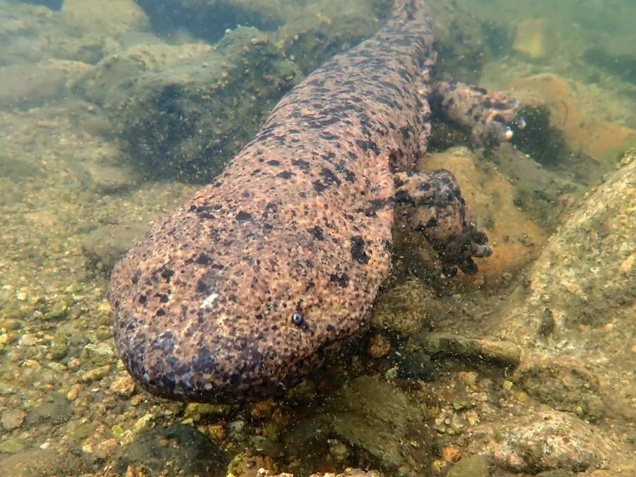

两栖动物 · 动物界
日本大鲵 Andrias japonicus

日本特有的巨型蝾螈，体长可达 1.5 米，头部长有疣突，夜间在清溪中捕食，被日本列为天然纪念物。
- 分类
- 门脊索动物门纲两栖纲目有尾目科隐鳃鲵科属大鲵属
- 栖息环境
- 日本山地清凉、多石的溪流与深潭
- 地理分布
- 日本本州、四国和九州的山地溪流
- 保护级别
- IUCN 近危（NT）；日本特别天然纪念物
物种志
日本大鲵体长 0.5–1.5 米，体重可达 20 千克以上，是体型仅次于中国大鲵的巨型两栖动物。头部宽扁，吻端钝圆，眼睛小且无眼睑，头部和体侧有许多疣状突起，皮肤粗糙、呈棕褐色或灰褐色并带深色斑纹，四肢短粗，尾部侧扁。
它生活在日本本州、四国和九州的山地溪流中，喜欢清凉、溶氧充足的水体，白天藏在石缝和深潭里，夜间捕食鱼、蟹、虾、蛙和水生昆虫。繁殖期在 8–9 月，雄鲵在溪流石下筑巢并守护卵，孵化期约 2 个月。由于河流整治、水质污染和外来大鲵杂交，野生种群下降，日本将其列为特别天然纪念物，IUCN 评估为近危。
形态与习性
- 食性鱼、蟹、虾、蛙和水生昆虫
- 体长约 0.5–1.5 m
- 体重大型个体可达 20 kg 以上
- 繁殖8–9 月产卵，雄鲵护卵，孵化约 2 个月
- 活动节律夜行性，白天藏在石缝和深潭中
- 寿命野外可达 50 年以上
趣味知识
- 日本大鲵头部长满疣突，是它与头较光滑的中国大鲵的区别之一。
- 雄鲵会在溪流石下筑巢护卵，直到幼鲵孵化。
- 日本大鲵被列为特别天然纪念物，捕捉和买卖受到严格限制。